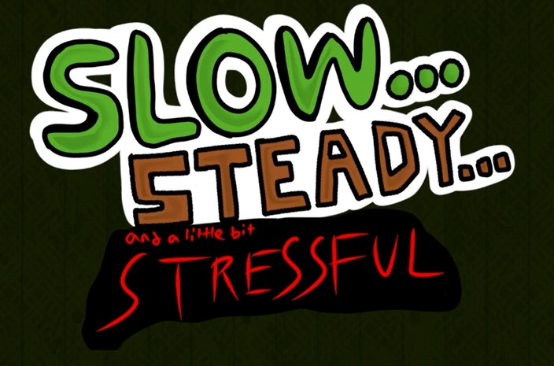
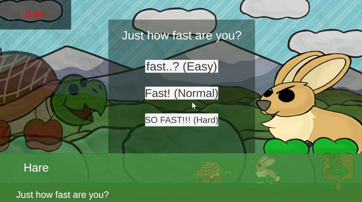
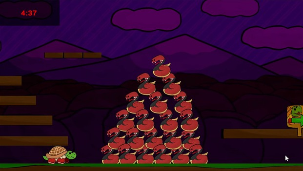

Slow, Steady, and a Little Bit Stressful
A two-dimensional narrative platformer based on the fairy tale The Tortoise and the Hare.

Facts and Roles
My responsibilities:
- Chief Level Designer
- Coding Lead
- Narrative
Partner’s responsibilities
- Artistry
- Dialogue
- Music
Game and Implementation
We created a timed two dimensional platformer where you play as the Tortoise racing the Hare. Throughout your race, you encounter powerups and different creatures in need to that you help by sacrificing your powerups, making the game more difficult for you but allowing for a better ending.


I was very interested in level design and my ability to influence player’s decisions on their power ups with how much of a difference they might make in a level’s difficulty.
Limits
Due to the class being project based, we were only allotted about a month and a half for this project, limiting its scope and level of polish.
Reflection
Incredibly enjoyable project and one that I am infinitely proud of, showcasing the ability of creative expression in game navigation and the capacity for environmental storytelling.
A link to a playthrough with commentary by myself: https://youtu.be/XFQdGrjM10c?si=ieL6N2FylzPuWDE3